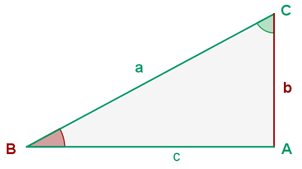
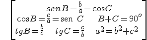
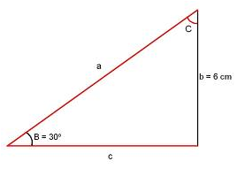
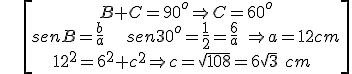
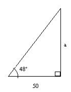
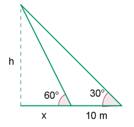
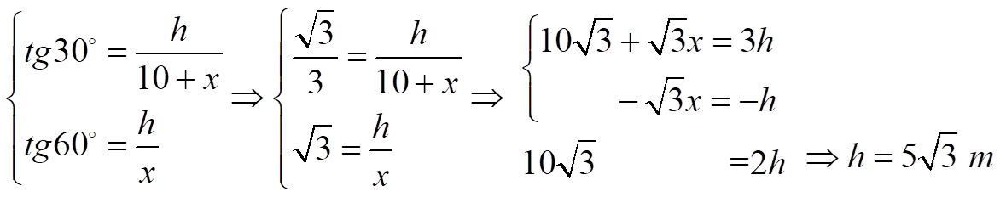
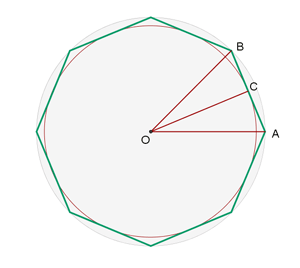
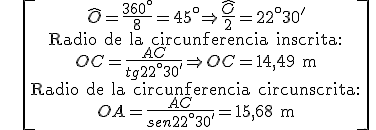

Resolver un triángulo es encontrar todos sus lados y todos sus ángulos. Para hacerlo en un triángulo rectángulo, tenemos estas fórmulas:

\[\begin{align} & senB=\frac{b}{a}=\cos C \\ & \cos B=\frac{c}{a}=\text{sen }C\ \ \ \ \ B+C={{90}^{o}} \\ & tgB=\frac{b}{c}\ \ \ \ tgC=\frac{c}{b}\ \ \ \ {{a}^{2}}={{b}^{2}}+{{c}^{2}}\ \ \\ \end{align}\]
- Ejemplo 1:


\[\begin{align} & B+C={{90}^{o}}\Rightarrow C={{60}^{o}} \\ & senB=\frac{b}{a}\ \ \ \ sen{{30}^{o}}=\frac{1}{2}=\frac{6}{a}\ \Rightarrow a=12cm \\ & {{12}^{2}}={{6}^{2}}+{{c}^{2}}\Rightarrow c=\sqrt{108}=6\sqrt{3}\ cm\ \\ \end{align}\]
- NOTA #1: para resolver un triángulo se necesitan tres datos (que no pueden ser los tres ángulos)
- NOTA #2: Para encontrar el ángulo cuando tenemos su razón trigonométrica usamos las teclas sin-1, cos-1 y tan-1 de la calculadora, presionando SHIFT o INV + sin, cos o tan.
- Ejemplo 2: Un poste está en el medio de un campo plano. A 50 m de su base, un observador mide el ángulo hasta su punto más alto y es de 48°. ¿Cuánto mide el poste?
Sea a la altura del poste.
Entonces a / 50 = tg 48°→ a = 50 tg 48° » 55,5 m

- Ejemplo 3: Calcula la altura de un árbol sabiendo que, desde un punto en el suelo, la cima se ve con un ángulo de 30˚, y 10 m más cerca, se ve con un ángulo de 60°.


- Ejemplo 4: El lado de un octógono regular es de 12 m. Encuentra los radios de las circunferencias inscrita y circunscrita
.

\[\begin{align} & \widehat{O}=\frac{{{360}^{\circ }}}{8}={{45}^{\circ }}\Rightarrow \frac{\widehat{O}}{2}={{22}^{\circ }}30' \\ & \text{Radio de la circunferencia inscrita:} \\ & OC=\frac{AC}{tg{{22}^{\circ }}30'}\Rightarrow OC=14,49\text{ m} \\ & \text{Radio de la circunferencia circunscrita:} \\ & OA=\frac{AC}{sen{{22}^{\circ }}30'}=15,68\text{ m} \\ \end{align}\]
Ejercicios:
1.- El ángulo de elevación del Sol es 35º. Calcula la longitud de la sombra de un hombre que mide 1,75 m.
2.- Calcula la altura que alcanza una escalera de 4,5 m que está apoyada en un muro, si el ángulo entre el suelo y la escalera es de 67o.
Soluciones: 1) 2,5 m; 2) 4,14 m